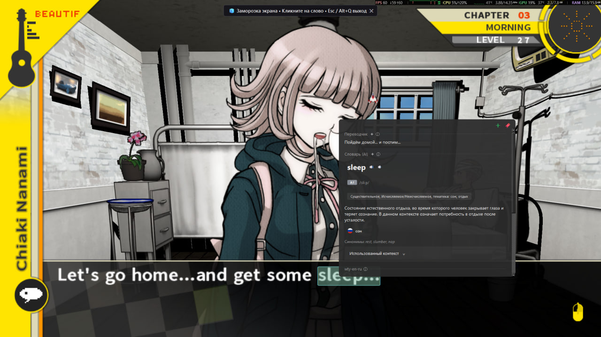
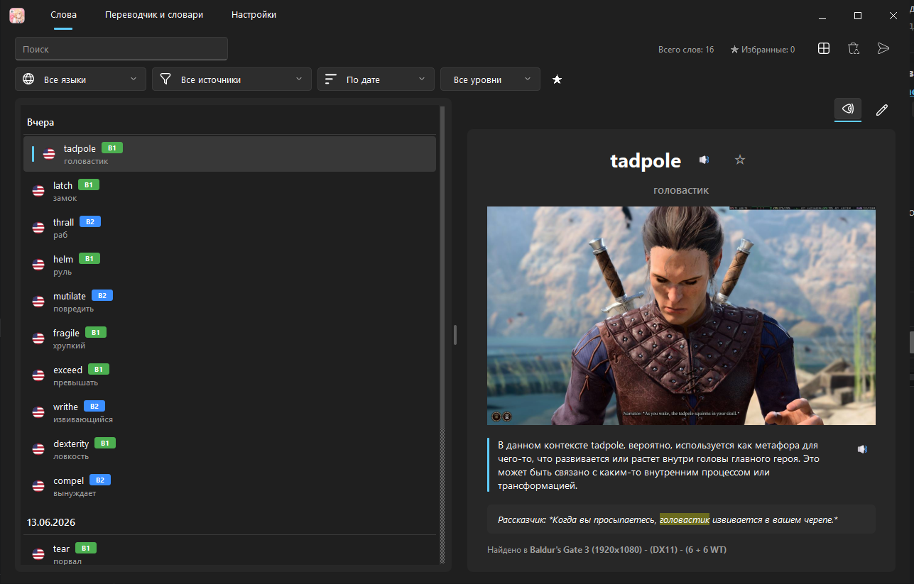

Native Windows OCR
Direct WinRT Media OCR engine delivers sub-frame recognition with zero cloud dependency and low CPU footprint.
Look up words anywhere in 3D games, visual novels, manga, videos, and desktop apps. Freeze screen mode, offline Yomitan engine, and 1-click Anki study flashcards.
No more pausing your flow, Alt-Tabbing to web browsers, or copying Kanji manually.
Direct WinRT Media OCR engine delivers sub-frame recognition with zero cloud dependency and low CPU footprint.
Freezes fast 3D camera frames, unlocks mouse cursor, and auto-pauses background game processes so you never miss dialogue.
Import any Yomitan dictionary archive. Complete offline morphological de-inflection, pitch accents, and frequency tags.
Integrate Groq (Llama 3) and Gemini 2.5 Flash for contextual lore explanations, CEFR levels, and nuanced sentence translations.
Direct connection via AnkiConnect: automatically captures scene screenshot crop, context line, audio TTS, and checks duplicates.
Review saved words with original scene screenshots, TTS voice replay, and export to CSV, JSON, or Anki TSV format.
In fast-paced 3D games (Elden Ring, Genshin Impact, Cyberpunk), mouse movement is locked to the camera and subtitles disappear in 2 seconds.
WordSnap solves this with Freeze Screen Mode:

Direct integration via AnkiConnect. Never copy-paste text or take manual screenshots again.

Auto Cropped SceneWith traditional tools, making a gaming flashcard takes 2 minutes per word. With WordSnap, it takes 0.5 seconds:
Designed to never interrupt your gameplay. Fully customizable in Settings.
| Shortcut | Scope | Action |
|---|---|---|
| Alt + Q | Global (Any App / Game) | Recognize text under cursor & open lookup popup |
| Esc | Overlay / Popup | Dismiss translation & unfreeze screen immediately |
| Space | Words Tab | Speak selected word (Audio TTS pronunciation) |
| Ctrl + F | Words Tab | Focus search bar to filter saved vocabulary |
| Ctrl + D | Words Tab | Toggle favorite (★) status for word |
| Delete | Words Tab | Delete selected word from history |
| ↑ / ↓ | Words Tab | Navigate between previous and next words |
Free for personal use. Choose between standard installer or portable archive.
git clone https://github.com/Wefdzen/WordSnap.git
Everything you need to know about setting up and using WordSnap.